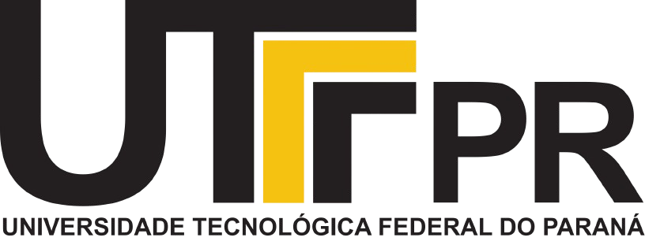

Sobre mim
Propostas
Vídeos
Prof. Dr. André Hekermann Buss
Pré candidato à Diretor UTFPR-PG
Juntos podemos mais!
Sobre Mim
Aspectos pessoais:
Em 04 de agosto de 2025, completo 15 anos de UTFPR;
Sou um profissional com visão do todo, possuo domínio do trabalho em equipe, criativo, orientado para resultado, motivado e com PAIXÃO pelo que faço.
Aspectos profissionais:
Experiência junto ao mercado de trabalho como gestor e como consultor empresarial;
Experiência de alguns anos como Coordenador de Ensino Superior;
Ampla experiência como Docente;
Palestrante sobre temas ligados a LIDERANÇA em diversas empresas e instituições de ensino, incluindo a própria UTFPR.
Formação acadêmica:
Doutor em Engenharia de Produção(UTFPR-PG);
MBA em Gestão Empresarial e Marketing(Cesumar / FGV);
Mestre em Ciências e Engenharia de Materiais e Processos Avançados (UDESC-SC);
Graduado em Engenharia de Materiais(UEPG).
Cursos Realizados:
Educação Profissional por Competência;
Profissional em Nível Tecnológico;
Implantação do Sistema de Qualidade;
Estudo do Sistema Balanced Scorecard (BSC);
6 Sigmas - São Paulo / SP;
Metodologia do Ensino Superior - Maringá / PR;
Cronoanálise e Balanceamento da Produção - Maringá / PR;
Vendas Industriais - Maringá / PR;
Produtividade Industrial - Sorocaba / SP;
Gerenciamento da Produção - Maringá / PR.